Vantage
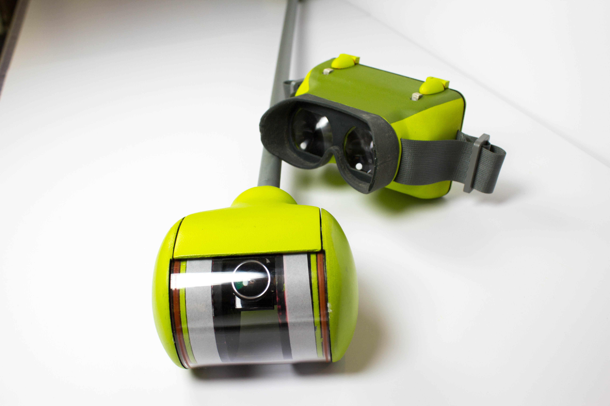

 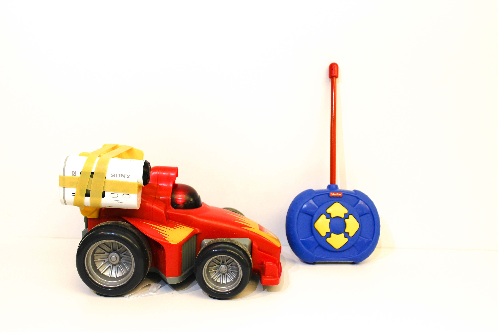
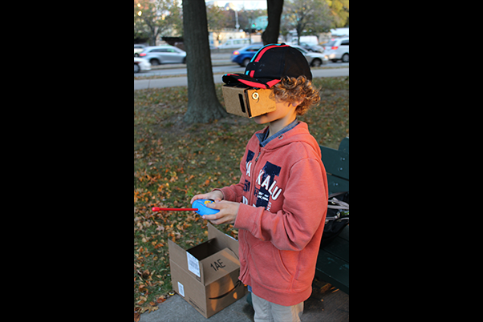
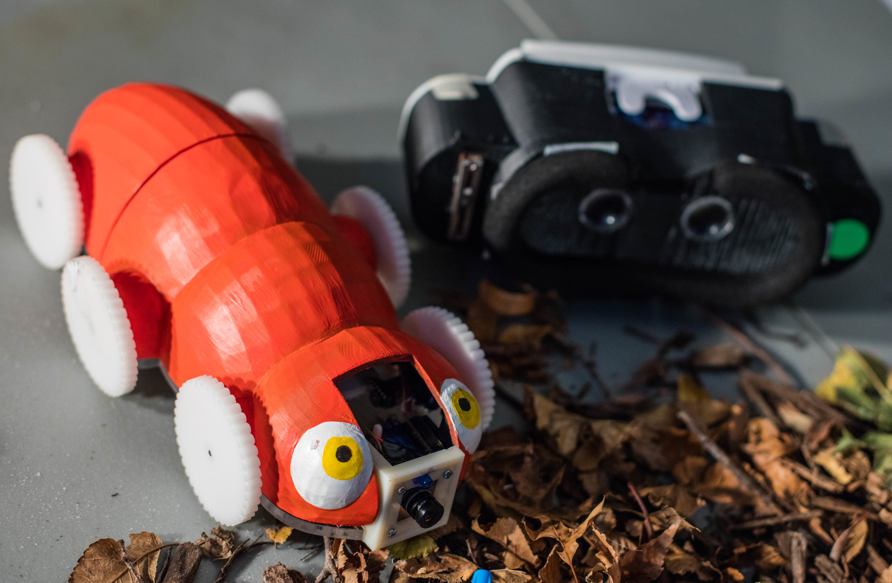
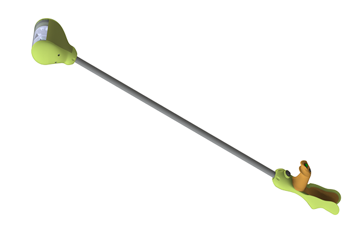
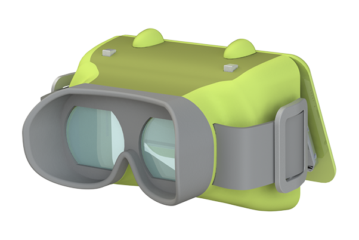
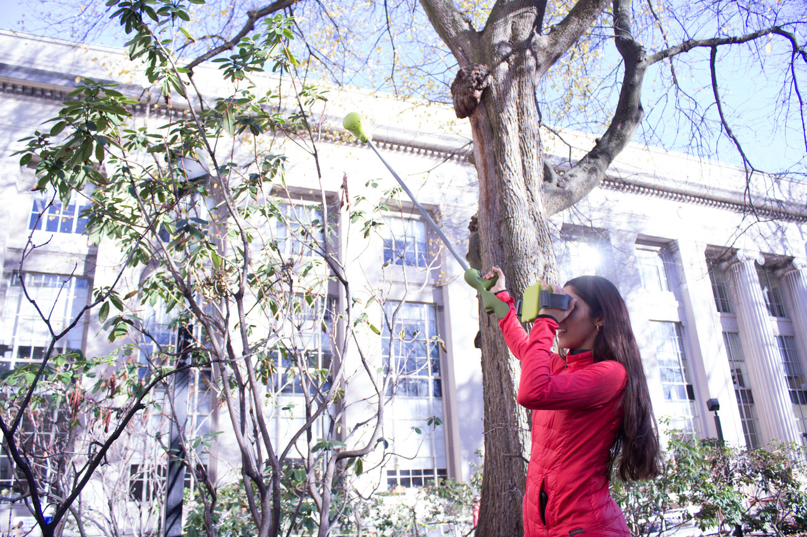
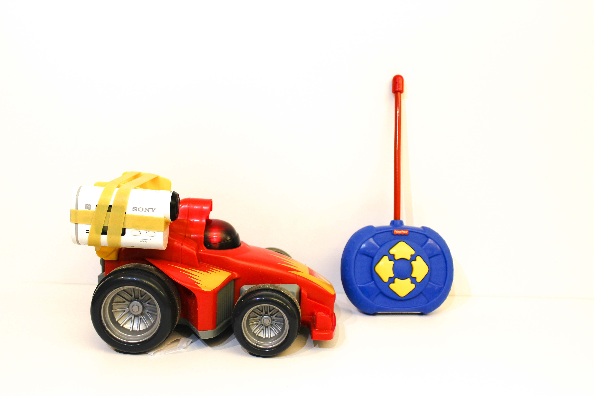
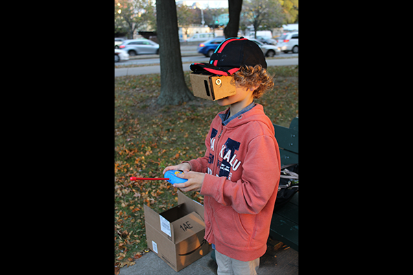
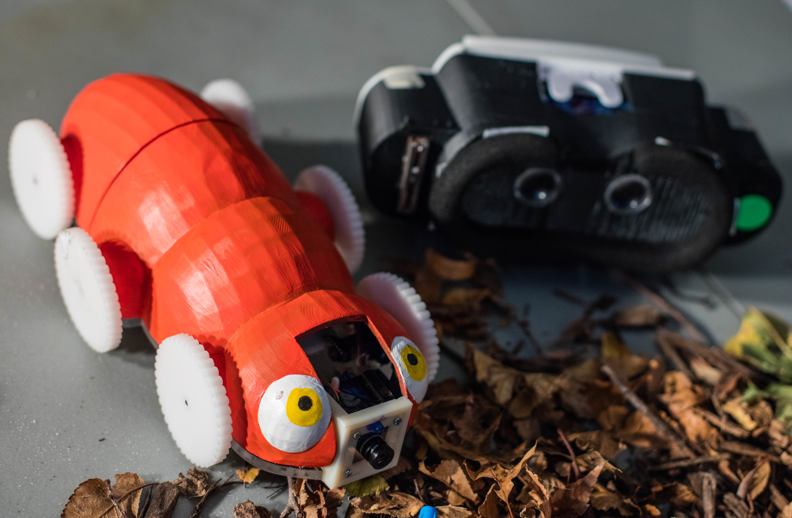
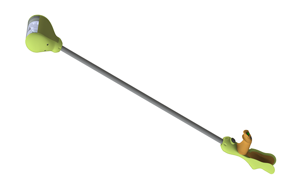
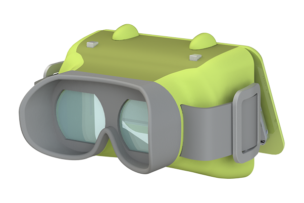
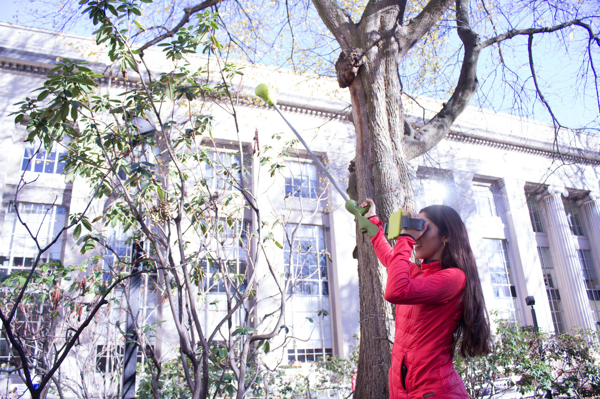
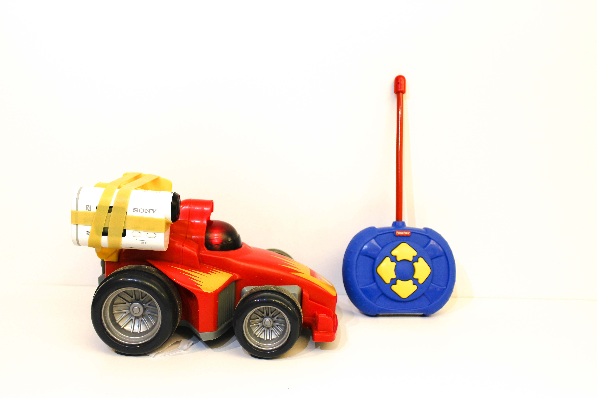
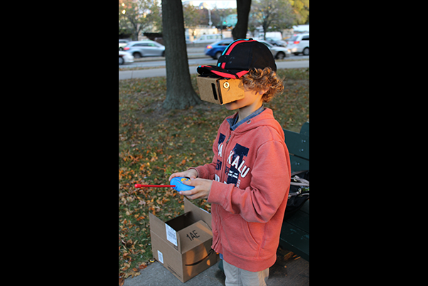
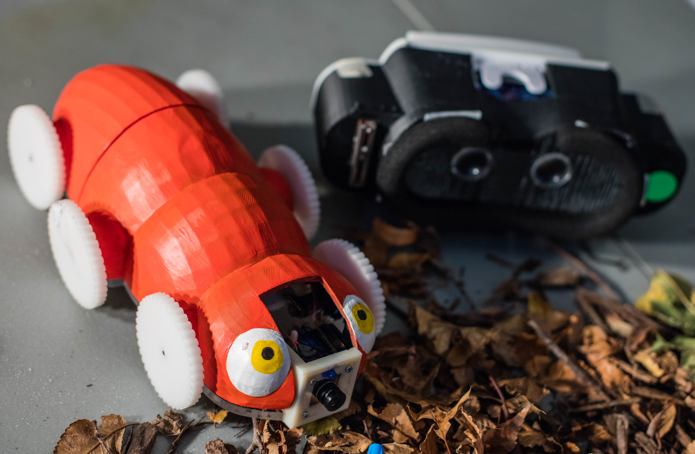
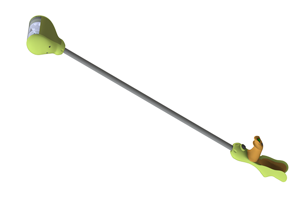
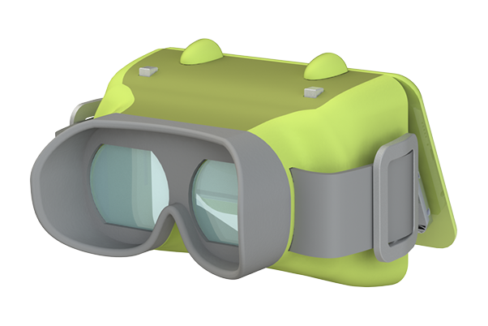
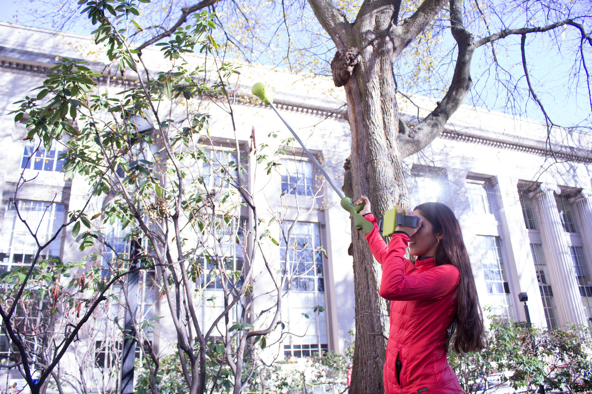
This project was for MIT's Capstone Product Engineering Process Class (2.009) for mechanical engineers. Each group works on a team of about 20 to create an alpha prototype of a product by the end of the semester within a topic. This year was magic.
Vantage is a wand and a viewer that delivers a fully immersive exploring experience. The wand uses a 3 foot displaced camera to increase the vantage points a child can reach. Footage is then live streamed to a smartphone placed inside of the viewer. In order to do this, the wand uses a high definition camera with a fish eye lens to wirelessly stream the world. The camera is housed in a water resistant, durable polycarbonate shell that protects the camera while still providing an unobstructed viewing experience. There are also LED light rings for use in the dark. A joystick on the handle of the wand gives full control over rotating the camera, and with a lightweight body and ergonomic handle, the wand serves as an extension of self.
The viewer uses high quality fresnel lenses, similar to the ones used in projectors, to deliver a vivid viewering experience. It also has photo taking capabilities by pressing a button at the top that then mechanically taps the phone on the inside of the device using a conductive coat that mimics your finger touching the screen. The flexible eyepiece, ergonomic body, and adjustable hand straps make the child's play experience more comfortable so we can enhance their explorations.
However, Vantage did not come without challenges. Our initial vision for the product was actually a first person view (FPV) RC toy that a child could drive around to get a bug's eye view of the world. However, we decided we would best deliver the most immersive exploring experience by building a camera wand that served as an extension of the self. This concept gave the child more freedom to explore what they wished, and better prioritized play safety. Thus, Vantage was born.
I mastered using Solidworks to design organic, ergonomic shapes.
Worked on a team of 22 and resolved disagreements and distributed work effectively.
Pivoted to new product visions that required facing new challenges each time.
Managed a tight time constraint to build an alpha prototype in a month.